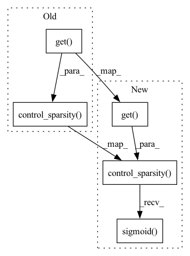

Pattern ID :32646

Before Change
mask = attr_wo_relu.squeeze()
mask = (mask[self_loop_edge_index[0]] + mask[self_loop_edge_index[1]]) / 2
mask = self.control_sparsity(mask, kwargs.get("sparsity"))
masks.append(mask.detach())
// Store related predictions for further evaluation.
After Change
if kwargs.get("edge_masks"):
edge_masks = kwargs.pop("edge_masks")
hard_edge_masks = [self.control_sparsity(mask, kwargs.get("sparsity")).sigmoid() for mask in edge_masks]
else:
edge_masks = []
In pattern: SUPERPATTERN
Frequency: 3
Non-data size: 5
Instances
Fragment ID: 95027048
Project Name: divelab/dig
Commit Name: 1094bb655b4d8f08e5342ea7f78a1dd25ea6a423
Time: 2021-09-27
Author: 1161283769@qq.com
File Name: dig/xgraph/method/deeplift.py
M Class Name: DeepLIFT
N Class Name: DeepLIFT
M Method Name: forward(3)
N Method Name: forward(3)
M Parent Class: WalkBase
N Parent Class: WalkBase
M File Name: dig/xgraph/method/deeplift.py
N File Name: dig/xgraph/method/deeplift.py
M Start Line: 80
M End Line: 105
N Start Line: 55
N End Line: 108
'>
Before Change
for ex_label in ex_labels:
edge_attr = self.explain_edges_with_loop(x, walks, ex_label)
mask = edge_attr
mask = self.control_sparsity(mask, kwargs.get("sparsity"))
mask = mask.sigmoid()
masks.append(mask.detach())
After Change
valid_mask = (edge_mask != - math.inf)
edge_mask[edge_mask == - math.inf] = edge_mask[valid_mask].min() - 1 // replace the negative inf
edge_masks.append(edge_mask)
hard_edge_masks.append(self.control_sparsity(edge_attr, kwargs.get("sparsity")).sigmoid())
related_preds = self.eval_related_pred(x, edge_index, hard_edge_masks, **kwargs)
'>
Fragment ID: 95027051
Project Name: divelab/dig
Commit Name: d2838464a04282f7b1b6e3a98cdec42f3a3a29c7
Time: 2022-05-25
Author: haiyang@tamu.edu
File Name: dig/xgraph/method/gnn_gi.py
M Class Name: GNN_GI
N Class Name: GNN_GI
M Method Name: forward(3)
N Method Name: forward(3)
M Parent Class: WalkBase
N Parent Class: WalkBase
M File Name: dig/xgraph/method/gnn_gi.py
N File Name: dig/xgraph/method/gnn_gi.py
M Start Line: 69
M End Line: 121
N Start Line: 68
N End Line: 124
'>
Before Change
for ex_label in ex_labels:
edge_attr = self.explain_edges_with_loop(x, walks, ex_label)
mask = edge_attr
mask = self.control_sparsity(mask, kwargs.get("sparsity"))
mask = mask.sigmoid()
masks.append(mask.detach())
After Change
edge_mask[edge_mask == - math.inf] = edge_mask[valid_mask].min() - 1 // replace the negative inf
edge_masks.append(edge_mask)
hard_edge_masks.append(self.control_sparsity(edge_attr, kwargs.get("sparsity")).sigmoid())
related_preds = self.eval_related_pred(x, edge_index, hard_edge_masks, **kwargs)
'>
Fragment ID: 95027046
Project Name: divelab/dig
Commit Name: d2838464a04282f7b1b6e3a98cdec42f3a3a29c7
Time: 2022-05-25
Author: haiyang@tamu.edu
File Name: dig/xgraph/method/gnn_lrp.py
M Class Name: GNN_LRP
N Class Name: GNN_LRP
M Method Name: forward(3)
N Method Name: forward(3)
M Parent Class: WalkBase
N Parent Class: WalkBase
M File Name: dig/xgraph/method/gnn_lrp.py
N File Name: dig/xgraph/method/gnn_lrp.py
M Start Line: 68
M End Line: 205
N Start Line: 67
N End Line: 211